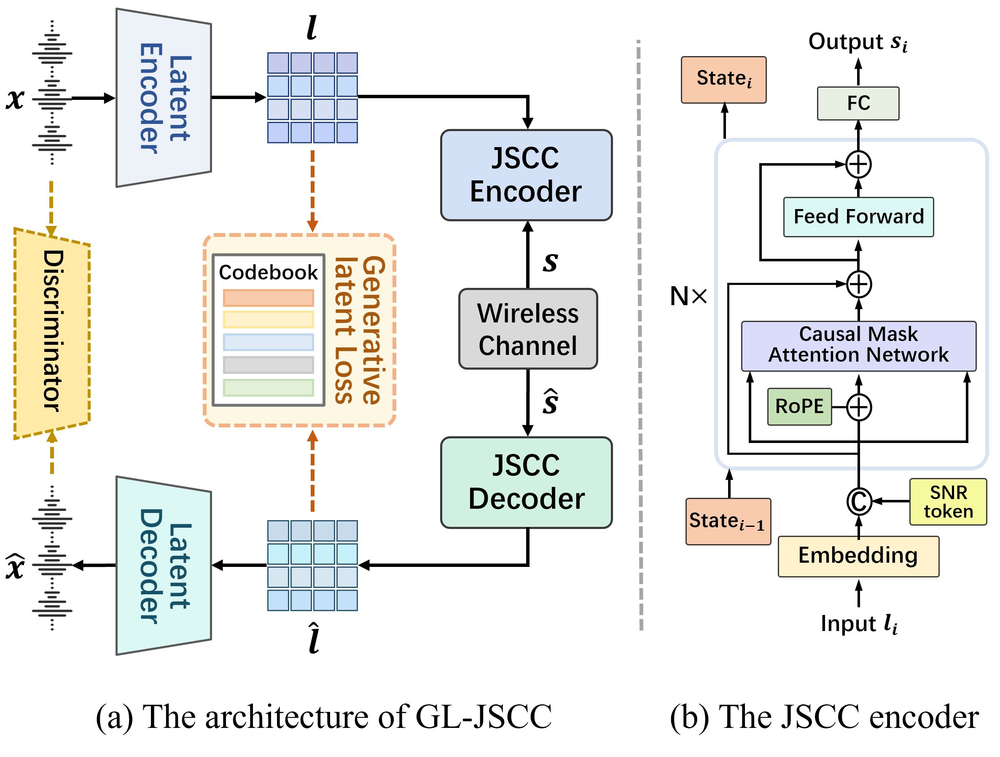

Audio Samples for "LOW-BANDWIDTH HIGH-FIDELITY SPEECH TRANSMISSION WITH GENERATIVE LATENT JOINT SOURCE-CHANNEL CODING"

Traditional audio codec + 5G LDPC (separated):
AMR-WB + 5G LDPC: A traditional wideband speech codec standardized by 3GPP, combined with 5G LDPC channel coding. This pipeline performs separate source and channel coding, serving as a baseline for separated transmission.
Opus + 5G LDPC: A modern low-delay audio codec supporting variable bit rates. With 5G LDPC error correction, it represents a strong traditional separated transmission scheme.
J.-M. Valin, et al., “Definition of the Opus audio codec,” IETF RFC 6716, 2012.
Neural audio codec + 5G LDPC (separated):
Encodec + 5G LDPC: A neural audio codec developed by Meta using residual vector quantization (RVQ). Coupled with 5G LDPC, it performs neural compression followed by conventional error protection, representing a neural-based separated approach.
SoundStream + 5G LDPC: Google’s end-to-end neural audio codec employing residual quantization and streaming-friendly design. Integrated with 5G LDPC, it serves as another strong separated benchmark.
N. Zeghidour et al., “SoundStream: An end-to-end neural audio codec,” IEEE/ACM TASLP, vol. 30, pp. 495–507, 2021.
Joint source–channel coding (JSCC):
DeepSC: A deep learning–based joint source–channel coding framework for semantic communication, which integrates compression and channel protection in an end-to-end manner.
GL-JSCC (Ours): A generative latent joint source-channel coding framework that performs JSCC in the RVQ-GAN-learned perceptual latent space with a streaming Transformer and three-stage progressive training, enabling high-fidelity speech transmission under low bandwidth, low SNR, and fading channels while saving up to 60% bandwidth compared to existing schemes.
SNR = 2 dB
Sample 1
Sample 2
Sample 3
SNR = 6 dB
Sample 1
Sample 2
Sample 3
All rights reserved